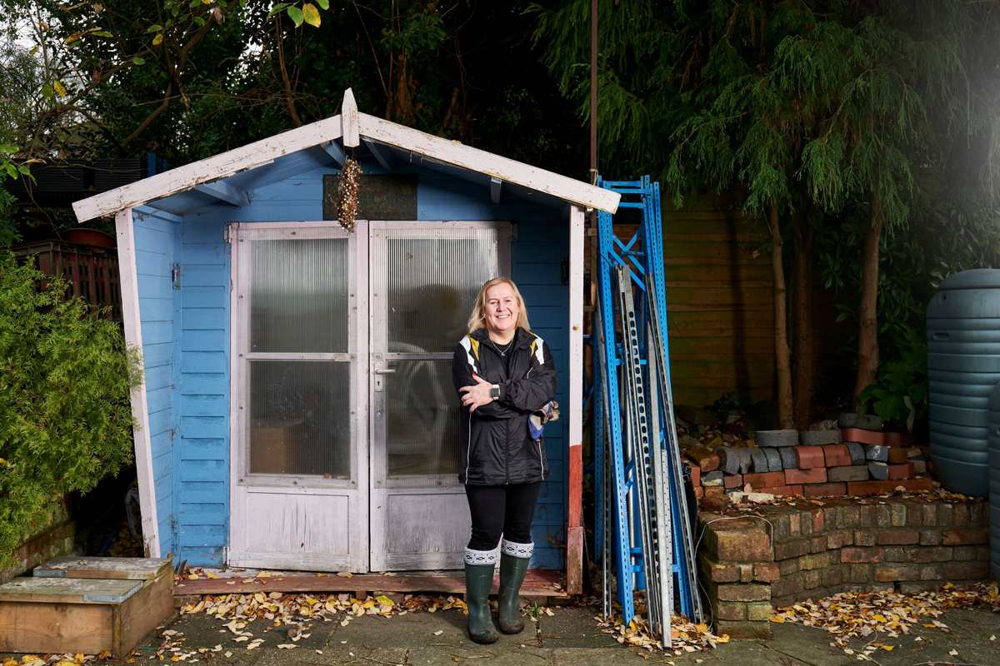

We haul what is inside a backyard shed: old mowers and trimmers, rusted tools, hoses, flower pots, broken lawn furniture, bikes, lumber scraps and boxes. The shelf of liquids is the exception. Gasoline, motor oil, fertilizer, weed killer and pool chemicals stay behind and go to your city's household chemical collection program. We point you to it.
A shed fills up the same way a garage does, only nobody walks through it every day. Things go in. The door gets harder to close. Eventually the mower lives on the patio because there is no room for it in the building that was bought to hold it. If the mower is most of the problem, we wrote a separate post on old mowers and small engine equipment.
What comes out of a full shed
Here is what we usually carry out of a shed cleanout:
- Lawn mowers, string trimmers, edgers and leaf blowers that stopped starting
- Rakes, shovels, hoes and tools with broken handles
- Garden hoses, sprinklers and hose reels
- Flower pots, planters and bags of old potting soil
- Broken lawn chairs, patio umbrellas and cushions
- Bikes, scooters and kids' outdoor toys
- Wheelbarrows and garden carts
- Lumber offcuts, fence pickets and leftover pavers
- Boxes of whatever did not fit in the garage
Everything on that list is non-hazardous and fair game. If some of the tools are still good, set them aside first. A working mower or a solid shovel can go to a neighbor or with local donation partners, and a lot of shed cleanouts end with a small keep pile by the back door.
The shelf of jugs and cans
Almost every shed has one. A shelf, or a corner of the floor, holding half-empty jugs and cans: gasoline, two-stroke mix, motor oil, fertilizer, weed killer, bug spray, pool chlorine, muriatic acid, a can of deck stain from three houses ago.
We do not take any of it. It is household hazardous waste, and it does not belong in a trailer with furniture and lumber. The good news is that your city takes most of it, usually free for residents.
McKinney's household hazardous waste and e-waste collection lists gasoline and diesel fuel, motor oil, antifreeze, pesticides, herbicides and fertilizers, pool chlorine and shock treatment, and BBQ and camping propane cylinders among what it accepts. It also says fuel has to be in an approved container and does not accept containers above its size limit, so read the page before you pour anything into anything. Frisco's Environmental Services runs a chemical and electronics disposal and reuse center that takes fertilizers, automotive chemicals and paints. Plano has its own household chemical collection program.
Do the chemical run first. Pull every jug, can and bag of chemical off the shelves before the crew arrives and set it aside for your city program. Then the rest of the shed is a straight haul, and nobody is guessing what is in an unlabeled bottle.
The unlabeled containers
The worst item in a shed is the one with no label. An old milk jug of something blue. A coffee can of something that smells like gasoline.
The EPA's guidance on storing pesticides safely says pesticides should always be stored in their original containers with the label, and never moved into drink bottles or other containers that someone could mistake for food or drink. It also says that if you cannot identify what is in a container, or how old it is, you should follow the advice on safe disposal rather than guess.
For a shed cleanout, that means the unlabeled jug goes in the chemical pile, not the trash. Your city program will take it and deal with it. The TCEQ's household hazardous waste page also notes that used motor oil can go to used oil collection centers, so the oil from an old mower has more than one place to go.
Mowers and small engines
We haul old mowers, trimmers and blowers. Drain them first. The fuel tank should be run dry or drained into an approved gas can, and the oil drained into a sealed container for the used oil collection. McKinney's bulky collection lists lawnmowers as accepted only when drained of fluids, and that is the right standard for us too.
A rusted steel mower deck and an old wheelbarrow go to a metal recycler. The plastic housings of electric trimmers and blowers go with the rest of the load, and any battery pack comes out first. Loose lithium batteries go to the city program, like the fuel.
The shed itself
This post is about what is in the shed. If the shed itself is rotted, leaning, or just in the way, that is a teardown, and we do those too. Hot tub, shed and playset removal covers how a shed comes down and what is left on the slab. Many people clear the contents first, decide the shed is worth keeping after all, and stop there.
If the shed is the smaller half of the problem and the garage is the bigger half, the garage cleanout checklist has the four-pile method that works for both. Brush and limbs piled behind the shed are their own job, covered in brush piles and what the city will not collect.
How the job runs
Send a photo of the inside of the shed, and mention whether the chemicals are already pulled out. A crew comes out, looks at what is going, and gives you a firm number before anything is lifted. The quote is the bill, and disposal is included.
Our own crews empty the shed, carry everything to the trailer, and sweep the floor when it is clear. The service page for this work is garage cleanouts. We work across the northern suburbs, including McKinney, Frisco, Allen, Plano, Prosper, Little Elm, The Colony, Richardson, Wylie and Fairview, seven days a week. Call before noon and same afternoon is typical, not guaranteed. You can send us a photo of the shed whenever you are ready.
Frequently asked questions
Do you take old lawn mowers?
Yes, once the fuel and oil are drained. Run the tank dry or drain it into an approved gas can, and take the fuel and oil to your city's collection program.
Will you take gasoline, fertilizer or weed killer?
No. Those are household hazardous waste. McKinney, Frisco and Plano all run collection programs for residents, and we will point you to yours.
What do I do with an unlabeled container?
Treat it as hazardous and take it to your city program. Do not pour it out and do not put it in the trash.
Do you tear down the shed too?
Yes, if you want it gone. Clearing the contents and tearing down the shed can be one job or two, whichever you prefer.
Do I need to empty the shed before you come?
No. Pull out the chemicals and anything you want to keep. Our crew carries out the rest.
The door closes again once the shed is empty. The rest of what we haul is on the services page.